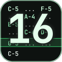
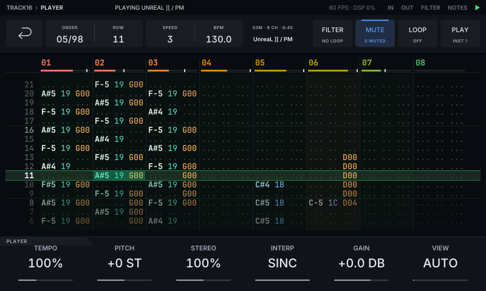
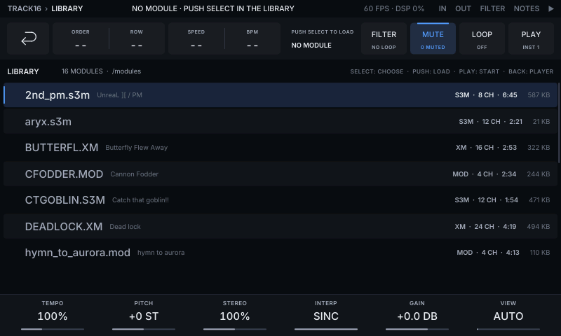

Modules
Every module on the stick in a browser, any folders. Playback by libopenmpt with adjustable tempo, pitch, stereo separation and interpolation.
For the TORAIZ SP-16

Track16An interactive tracker-module player for the SP-16. It plays MOD, S3M, XM, IT and the other formats libopenmpt supports from a USB stick, and turns them into something to perform with: mute, loop and jump on the pads, play the module's instruments, send channels through the SP-16's analog filter or out of its single outputs, and lock other gear to it over MIDI.


Every module on the stick in a browser, any folders. Playback by libopenmpt with adjustable tempo, pitch, stereo separation and interpolation.
Mute and solo channels, hold a pad for a loop of 1 to 64 rows, play an instrument chromatically or as a kit, jump to orders with the step keys, quantized to bar, beat or row.
Send single channels through the hardware filter and back, or the whole mix, with DRIVE into it. The loop's latency is measured and compensated, so both paths stay in time.
Any channel to OUT 3–8, mono or as stereo pairs, with or without MAIN. Jacks can carry the clean mix, the filter's return or a click instead, and a test tone per output finds your cables.
Sends clock from the module's real row timing and the module's notes on 16 channels. Follows a master's clock, rows locked to its pulses; MIDI channel n plays module channel n's voice, with bend and vibrato; a control channel works as remote pads and knobs.
The pattern data falls as “digital rain” onto a playhead in tracker colours, each note flaring in its instrument's colour, with row numbers, beat lines and each channel's name and level. SHIFT + HOME saves a screenshot to the stick.
autoexec.bin the boot menu track16 the app track16.conf optional settings modules/… your modules, in any folders
track16
binary from the latest release and your
modules on a USB stick.Track16 runs from the stick. Nothing is installed on the unit and nothing is written to its internal memory; switching off and back on without the stick gives you the stock SP-16.
Version 0.2.0, being tested on the unit. Download track16 from the
latest release, or build it from the source
with scripts/build-unit.sh (Docker or Colima). The
README has every setting of
track16.conf, the MIDI details and how the engine works.
What every control on the SP-16 does while Track16 runs. Pick a pad mode and hold SHIFT here to see the pads and keys change; point at any control for its full description.
The drawing follows freesp16's panel illustration. Lamps: the pads show the active mode (channel colours, red = through the filter, slow blink = latched); the step keys show the order page (white = playing, amber blinking = queued jump). The rear jacks are not drawn: MAIN OUT and PHONES carry the mix; OUT 3–8 carry what the OUTS pad mode sends them, channels (each jack alone in mono, or 3-4, 5-6, 7-8 as stereo pairs) or the clean mix, the filter's return or a click.